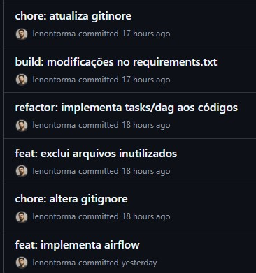
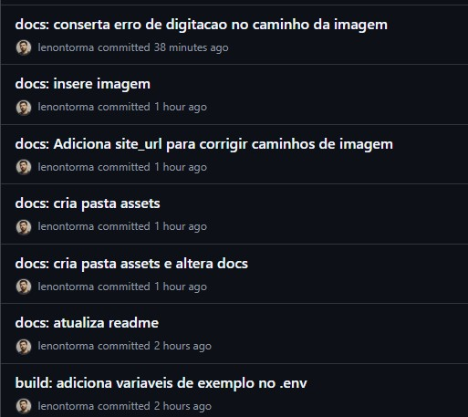
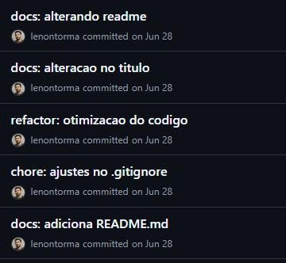

Versionamento e Boas Práticas (Git/GitHub)¶
A gestão do código-fonte deste projeto segue padrões que visam garantir um histórico de alterações limpo, compreensível e rastreável. As duas principais práticas adotadas são o uso de Commits Semânticos e a estratégia de Feature Branching.
Padrão de Commits: Commit Semântico¶
Para manter o histórico de commits organizado e legível, o projeto adota a especificação de Commits Convencionais (Conventional Commits).
Por que utilizar este método? * Clareza: Torna o histórico de alterações autoexplicativo, facilitando a identificação de novas funcionalidades, correções e outras mudanças. * Automação: Permite a geração automática de changelogs e facilita a integração com processos de CI/CD. * Rastreabilidade: Ajuda a entender o escopo de cada alteração de forma rápida.
A estrutura básica de um commit é:
tipo: descrição curta
Tipos mais utilizados no projeto:
* feat: Uma nova funcionalidade (feature).
* build: Alterações que afetam o sistema de construção ou dependências
* fix: Uma correção de bug.
* docs: Alterações na documentação.
* style: Alterações de formatação que não afetam o código (espaços, ponto e vírgula, etc.).
* refactor: Uma alteração de código que não corrige um bug nem adiciona uma funcionalidade.
* chore: Mudanças no processo de build, ou adição de dependências.
Exemplo de Histórico de Commits¶
A imagem abaixo ilustra o uso do padrão no histórico de commits deste projeto.
  
Estratégia de Branching: Feature Branch¶
O desenvolvimento de novas funcionalidades ou alterações significativas é feito em branches isoladas para não comprometer a estabilidade da branch principal (main).
Caso de Uso: Implantação do Airflow¶
- Uma nova branch,
feature/airflow, foi criada a partir damain. - Todo o desenvolvimento relacionado ao Airflow (criação da DAG, configuração do Astro CLI, ajustes no Docker) foi realizado nesta branch.
- Após a conclusão e testes, a branch
feature/airflowfoi mesclada (merged) de volta namain, integrando a funcionalidade de orquestração ao projeto principal.
Histórico Visual do Merge¶
O diagrama abaixo, gerado com Mermaid, ilustra este fluxo de desenvolvimento de forma simplificada:
gitGraph
commit id: "Início"
commit id: "Scraper v1"
branch feature/airflow
checkout feature/airflow
commit id: "Add Astro CLI"
commit id: "Cria DAG"
commit id: "Configura tasks"
checkout main
merge feature/airflow id: "Merge Airflow"
commit id: "Ajustes pós-merge"
Este método garante que a branch main sempre contenha uma versão estável e testada do projeto.